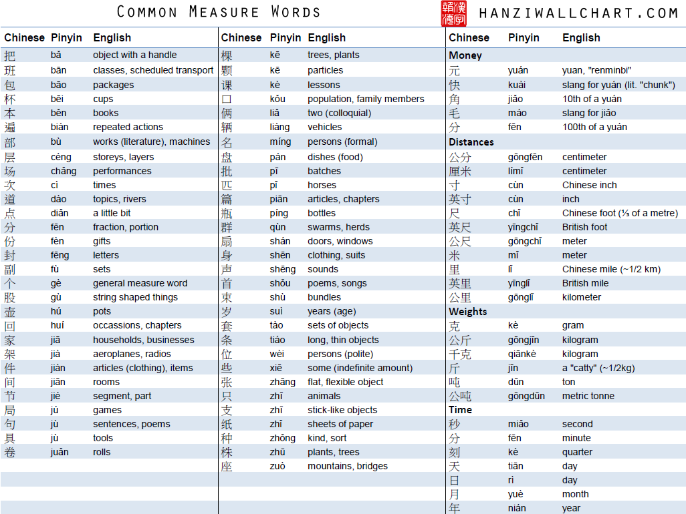

Chinese Pinyin is a Chinese method that China people use, this will be one of the fast way when you are beginner of learning Chinese. It is the method that easier for the one who know English because it is a method that use English to learn Chinese. Below this is a picture that have the easy word of Chinese and it is in the pinyin form.
